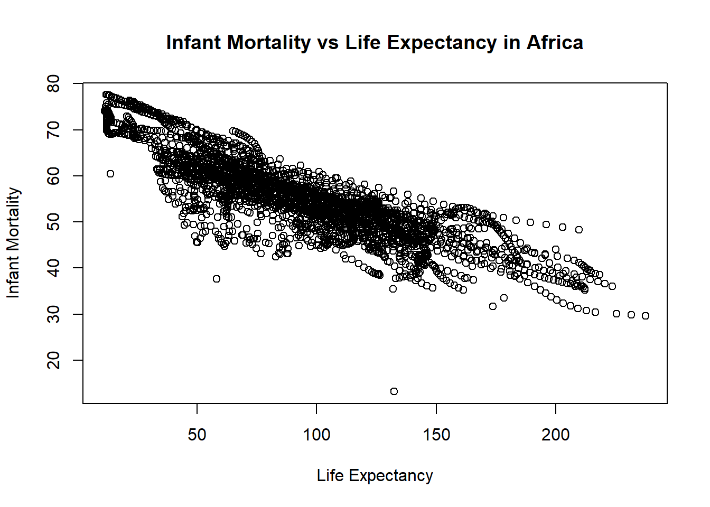
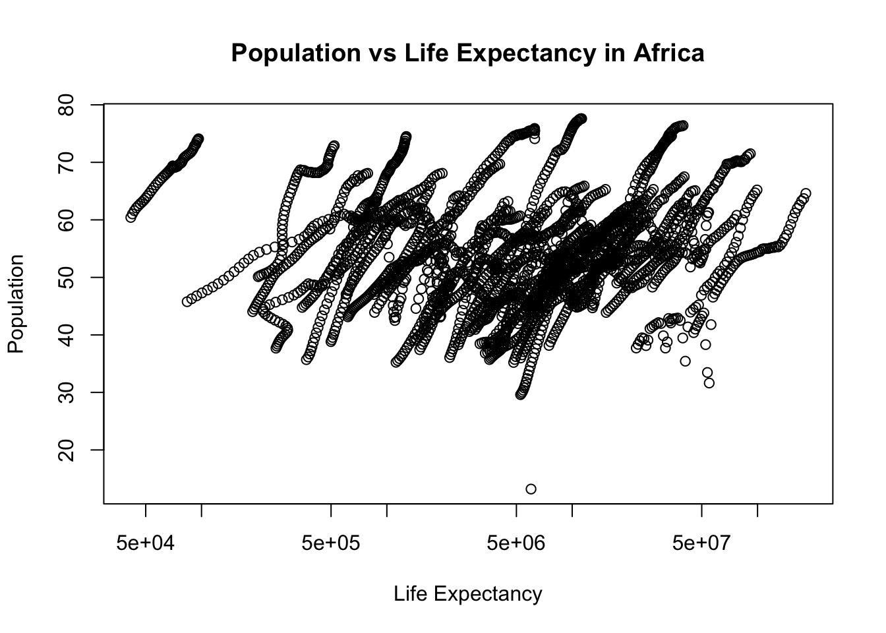
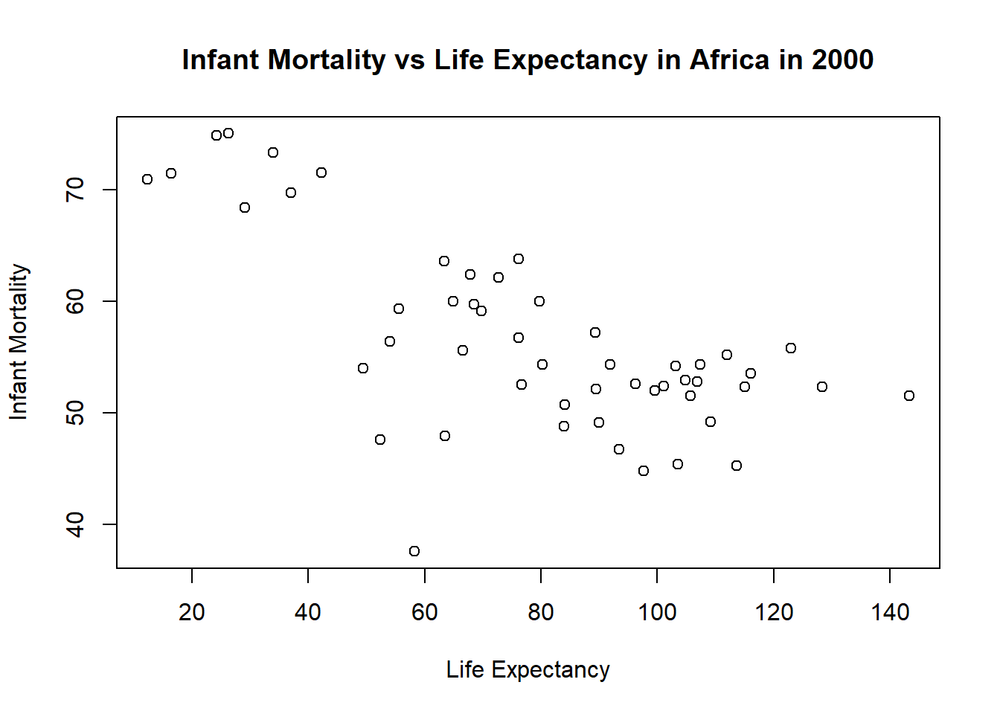
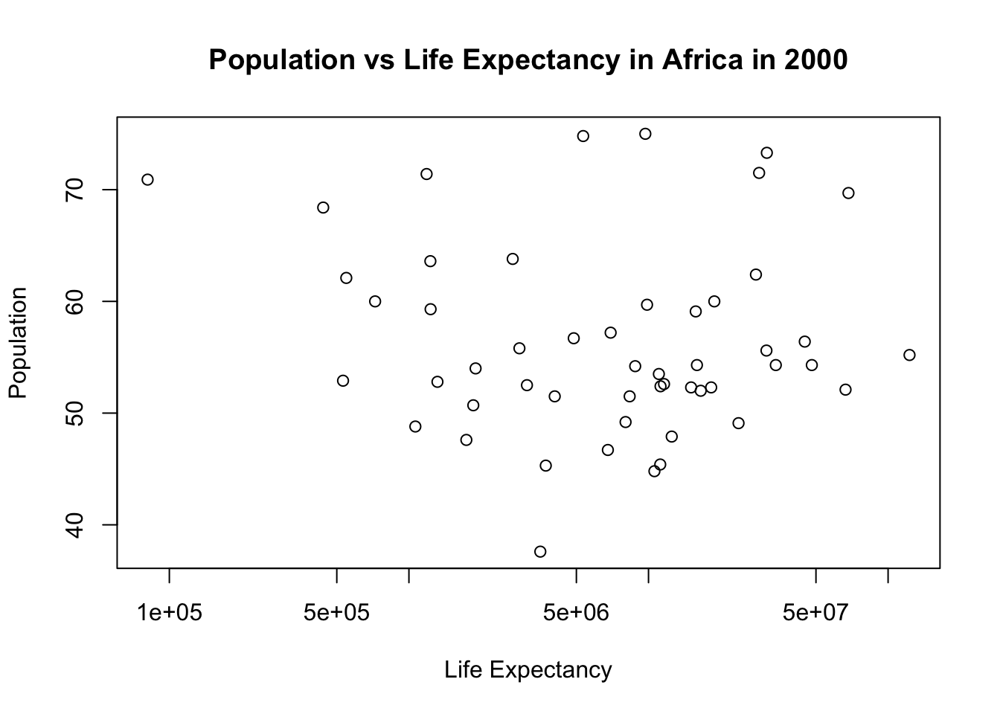

Warning: package 'dslabs' was built under R version 4.4.3
#takes gapminder dataset and creates a new dataframe that only takes the countries that have "Africa" in the continent columnafricadata <- gapminder[gapminder$continent =="Africa", ]#creates a new dataframe and adds the columns "infant_mortality" and "life_expectancy" from africadataafrica_infant_mortality <- africadata[, c("infant_mortality", "life_expectancy")]#creates a new dataframe and adds the columns "population" and "life_expectancy" from africadataafrica_pop <- africadata[, c("population", "life_expectancy")]
Plotting
#Plotting life expectancy as a function of infant mortality#using the plot function to make the plot and assigning it to a variable named "plot1"plot1 <-plot( #takes the infant_mortality column from africa_infant_mortality and makes it the x-axis values africa_infant_mortality$infant_mortality, #takes the life expactancy column from africa_infant_mortality and makes it the y-axis values africa_infant_mortality$life_expectancy, xlab ="Life Expectancy", #labels the x-axis "Life Expectancy"ylab ="Infant Mortality", #labels the y-axis "Infant Mortality"#titles the whole plot "Infant Mortality vs Life Expectancy in Africa"main ="Infant Mortality vs Life Expectancy in Africa")

#Plotting life expectancy as a function of population#using the plot function to make the plot and assigning it to a variable named "plot2"plot2 <-plot( #takes the population column from africa_pop and makes it the x-axis values africa_pop$population, #takes the life expactancy column from africa_pop and makes it the y-axis values africa_pop$life_expectancy, xlab ="Life Expectancy", #labels the x-axis "Life Expectancy"ylab ="Population", #labels the y-axis "Population"#titles the whole plot "Population vs Life Expectancy in Africa"main ="Population vs Life Expectancy in Africa",log ="x"#sets the scale of the x-axis to be logarithmic)

You should also see a positive correlation between population size and life expectancy. In both plots, especially the second one, you will see ‘streaks’ of data that seem to go together. Can you figure out what is going on here?
The “streaks” in the plots likely represent individual countries observed across multiple years. Because africadata contains statistics for infant mortality and population for the same countries across different years, multiple observations from each country appear in the plots. Since these values typically change gradually over time within a country, the data points remain close together, forming visible “streaks.”
More Data Processing
#figures out which years have missing data for infant mortalitytapply(africadata$infant_mortality, africadata$year, function(x) sum(is.na(x)))
#the tapply function applies a funciton to a set vectors#tapply is applying the function sum(is.na(x)) to the groups africadata$infant_mortality and africadata$year#the sum() function takes the sum/total of a group#the is.na() function checks each value in a dataframe/group is NA or not#so sum(is.na(x) returns the total amount of NA values in each year#Creates a new object by extracting only the data for the year 2000 from the africadata objectafrica_2000 <- africadata[africadata$year =="2000",]
More Plotting
#Plotting life expectancy as a function of infant mortality for year 2000#using the plot function to make the plot and assigning it to a variable named "plot3"plot3 <-plot( #takes the infant_mortality column from africa_2000 and makes it the x-axis values africa_2000$infant_mortality,#takes the life expactancy column from africa_2000 and makes it the y-axis values africa_2000$life_expectancy,xlab ="Life Expectancy", #labels the x-axis "Life Expectancy"ylab ="Infant Mortality", #labels the y-axis "Infant Mortality"#titles the whole plot "Infant Mortality vs Life Expectancy in Africa in 2000"main ="Infant Mortality vs Life Expectancy in Africa in 2000")

#Plotting life expectancy as a function of population#using the plot function to make the plot and assigning it to a variable named "plot4"plot4 <-plot( #takes the population column from africa_2000 and makes it the x-axis values africa_2000$population, #takes the life expactancy column from africa_2000 and makes it the y-axis values africa_2000$life_expectancy, xlab ="Life Expectancy", #labels the x-axis "Life Expectancy"ylab ="Population", #labels the y-axis "Population"#titles the whole plot "Population vs Life Expectancy in Africa in 2000"main ="Population vs Life Expectancy in Africa in 2000", log ="x"#sets the scale of the x-axis to be logarithmic)

Simple Model Fits
# fit1 models life expectancy as a function of infant mortality for African countries in 2000.#the lm() function is used to fit linear modelsfit1 <-lm(life_expectancy ~ infant_mortality, data = africa_2000)summary(fit1) #prints results of fir1
Call:
lm(formula = life_expectancy ~ infant_mortality, data = africa_2000)
Residuals:
Min 1Q Median 3Q Max
-22.6651 -3.7087 0.9914 4.0408 8.6817
Coefficients:
Estimate Std. Error t value Pr(>|t|)
(Intercept) 71.29331 2.42611 29.386 < 2e-16 ***
infant_mortality -0.18916 0.02869 -6.594 2.83e-08 ***
---
Signif. codes: 0 '***' 0.001 '**' 0.01 '*' 0.05 '.' 0.1 ' ' 1
Residual standard error: 6.221 on 49 degrees of freedom
Multiple R-squared: 0.4701, Adjusted R-squared: 0.4593
F-statistic: 43.48 on 1 and 49 DF, p-value: 2.826e-08
The relationship between life expectancy and infant mortality are highly significant (p-value: 2.826e-08) and strongly negatively correlated. Based on the slope, each additional infant death per 1,000 live births is associated with a decrease of approximately 0.19 years in life expectancy. When infant mortality is theoretically zero, predicted life expectancy is about 71.3 years. R squared = 0.47 means about 47% of the variability in life expectancy is explained by infant mortality.
# fit2 models life expectancy as a function of population for African countries in 2000.fit2 <-lm(life_expectancy ~ population, data = africa_2000)summary(fit2) #prints results of fir1
Call:
lm(formula = life_expectancy ~ population, data = africa_2000)
Residuals:
Min 1Q Median 3Q Max
-18.429 -4.602 -2.568 3.800 18.802
Coefficients:
Estimate Std. Error t value Pr(>|t|)
(Intercept) 5.593e+01 1.468e+00 38.097 <2e-16 ***
population 2.756e-08 5.459e-08 0.505 0.616
---
Signif. codes: 0 '***' 0.001 '**' 0.01 '*' 0.05 '.' 0.1 ' ' 1
Residual standard error: 8.524 on 49 degrees of freedom
Multiple R-squared: 0.005176, Adjusted R-squared: -0.01513
F-statistic: 0.2549 on 1 and 49 DF, p-value: 0.6159
Unlike infant mortality, population size does not appear to have a meaningful effect on life expectancy (p-value: 0.6159). R-squares = 0.005 means only 0.05% of the variation in life expectancy is explained by population.
This section contributed by Nalany Richardson
I chose ml-latest-small dataset from dslabs to see how movies and their IMBD ratings were related.
# Set up packages for data and upload excel files if needed library(tidyverse)
Warning: package 'tidyverse' was built under R version 4.4.3
Warning: package 'ggplot2' was built under R version 4.4.3
Warning: package 'tibble' was built under R version 4.4.3
── Attaching core tidyverse packages ──────────────────────── tidyverse 2.0.0 ──
✔ dplyr 1.1.4 ✔ readr 2.1.5
✔ forcats 1.0.0 ✔ stringr 1.5.1
✔ ggplot2 4.0.1 ✔ tibble 3.3.1
✔ lubridate 1.9.4 ✔ tidyr 1.3.1
✔ purrr 1.0.4
── Conflicts ────────────────────────────────────────── tidyverse_conflicts() ──
✖ dplyr::filter() masks stats::filter()
✖ dplyr::lag() masks stats::lag()
ℹ Use the conflicted package (<http://conflicted.r-lib.org/>) to force all conflicts to become errors
library(readxl)
Warning: package 'readxl' was built under R version 4.4.3
# Open excel files from project folder (ml-latest-small is the original name from the dslabs repository). movies <-read_excel("../ml-latest-small/movies.xlsx")
movies ...2 ...3
Length:9743 Length:9743 Length:9743
Class :character Class :character Class :character
Mode :character Mode :character Mode :character
summary(ratings)
userId movieId rating timestamp
Min. : 1.0 Min. : 1 Min. :0.500 Min. :8.281e+08
1st Qu.:177.0 1st Qu.: 1199 1st Qu.:3.000 1st Qu.:1.019e+09
Median :325.0 Median : 2991 Median :3.500 Median :1.186e+09
Mean :326.1 Mean : 19435 Mean :3.502 Mean :1.206e+09
3rd Qu.:477.0 3rd Qu.: 8122 3rd Qu.:4.000 3rd Qu.:1.436e+09
Max. :610.0 Max. :193609 Max. :5.000 Max. :1.538e+09
summary(tags)
tags ...2 ...3 ...4
Length:3684 Length:3684 Length:3684 Length:3684
Class :character Class :character Class :character Class :character
Mode :character Mode :character Mode :character Mode :character
# make movies summary from ratingsmovie_summary <- ratings %>%filter(!is.na(rating)) %>%group_by(movieId) %>%summarise(avg_rating =mean(rating),n_ratings =n(),.groups ="drop" )
# Converted from .csv to .xlsx which created spaces in column. Run trimws to fix.names(movies) <-trimws(names(movies))names(ratings) <-trimws(names(ratings))# Remove any missing ratingsratings_clean <- ratings %>%filter(!is.na(rating))# Process and join movie and rating dataratings_clean <- ratings %>%filter(!is.na(rating))# Reinspect cleaned datastr(ratings_clean)
Min. 1st Qu. Median Mean 3rd Qu. Max.
0.500 3.000 3.500 3.502 4.000 5.000
# Plot average rating vs number of ratingsggplot(movie_summary, aes(x = n_ratings, y = avg_rating)) +geom_point(alpha =0.4) +scale_x_log10() +labs(title ="Average rating vs number of ratings (by movieId)",x ="Number of ratings (log scale)",y ="Average rating" ) +theme_minimal()
Interpretation
Movies were summarized using average user ratings and the total number of ratings/movie. This plot aims to show the relationship between ‘popularity’ (number of ratings) and level of rating (1- worst and 5- best rating). As the number of reviews goes up, it appears that the average rating also increases.
# Now we'll make a simple fit model. But first, we need to fix column names in 'tags' and make sure the movieId types match (some data points are misaligned).names(tags)[1:4] <-c("userId", "movieId", "tag", "timestamp")tags$movieId <-as.numeric(tags$movieId)
Warning: NAs introduced by coercion
# Create movie average ratingmovie_summary <- ratings %>%filter(!is.na(rating)) %>%group_by(movieId) %>%summarise(avg_rating =mean(rating), .groups ="drop")# Let's do 'funny' tagged movies and see what happens...test_tag <-"funny"# Don't forget to make an indicator. AI was used to figure out this step and deploy the code.tag_indicator <- tags %>%filter(tag == test_tag) %>%distinct(movieId) %>%mutate(has_tag =1)# NOW we can combine the data and create fit model# Do movies tagged as 'funny' have different average ratings than movies without the tag? AI was used to discover how to use left_jointag_df <- movie_summary %>%left_join(tag_indicator, by ="movieId") %>%mutate(has_tag =ifelse(is.na(has_tag), 0, has_tag))fit_tag <-lm(avg_rating ~ has_tag, data = tag_df)summary(fit_tag)
Call:
lm(formula = avg_rating ~ has_tag, data = tag_df)
Residuals:
Min 1Q Median 3Q Max
-2.7615 -0.4623 0.1551 0.6470 1.7385
Coefficients:
Estimate Std. Error t value Pr(>|t|)
(Intercept) 3.261530 0.008829 369.409 <2e-16 ***
has_tag 0.425037 0.189988 2.237 0.0253 *
---
Signif. codes: 0 '***' 0.001 '**' 0.01 '*' 0.05 '.' 0.1 ' ' 1
Residual standard error: 0.8697 on 9722 degrees of freedom
Multiple R-squared: 0.0005145, Adjusted R-squared: 0.0004117
F-statistic: 5.005 on 1 and 9722 DF, p-value: 0.0253
Interpretation of fit model
A simple linear regression was used to examine whether the presence of the tag “funny” (ascribed by users) was associated with low, average, or higher movie ratings than non-‘funny’ movies.. Movies tagged as “funny” had significantly higher average ratings compared to movies without this tag (β = 0.43, p = 0.0253). Funny movies average a rating of 3.69 compared to their unfunny counterparts at 3.26. While the model only explains a small proportion of total variation in ratings (R2 = 0.0005), there does appear to be a significant relationship here. This was a fun analysis, and I was surprised that funnier movies actually had a positive impact on user rating.